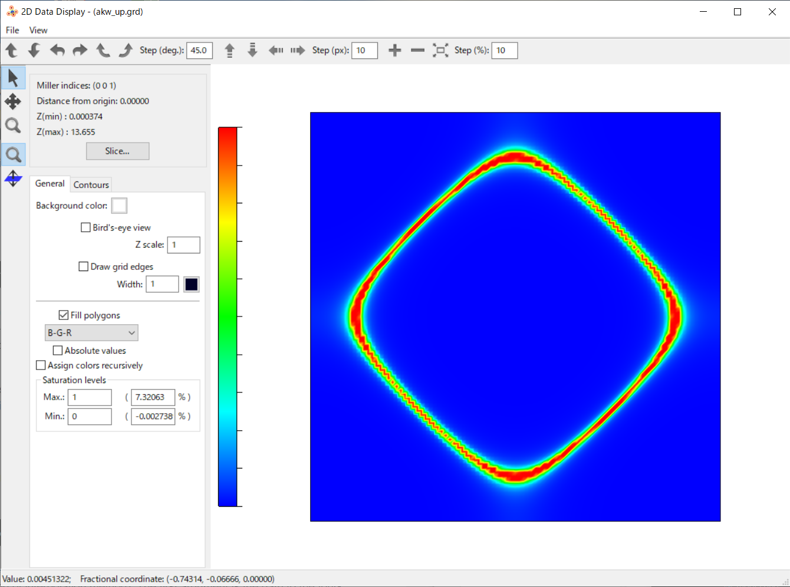
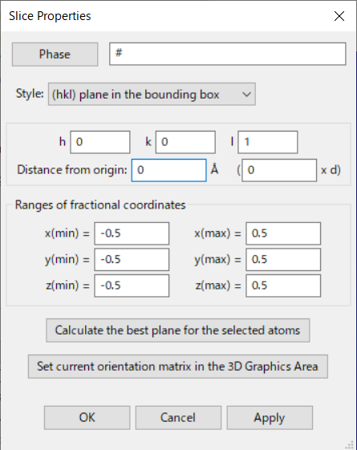

A(k,w) converter¶
DCore can generate four-dimensional data of \(A(\boldsymbol{k},\omega)\) on a linear grid.
An auxiliary tool akw_converter converts these data into three-dimensional volumeric data with a fixed value of \(\omega\) that is suitable for reading with existing 3D graphic softwares such as VESTA.
How to use¶
The following steps should be done after all calculations are finished, namely, self-consistent calculation by dcore and even post calculations by dcore_post.
Modifying ini file
A parameter
nk_meshis added to the ini file[tools] nk_mesh = 100
This parameter activates a grid calculation. \(A(\boldsymbol{k},\omega)\) is to be computed on a four-dimensional grid of size \(100^3 \times N_{\omega}\). In order to reduce the data size, one could instead specify a set of 3 parameters as
[tools] nk0_mesh = 100 nk1_mesh = 100 nk2_mesh = 4
In this case, \(k_z\) is computed on 0, pi/2, pi and 3pi/3. Note that the k-grid is generated in the primitive reciprocal space. It is also highly recommended to reduce the number of frequency points. For example, if only the Fermi surface is of interest, one can set
Nomega = 3 omega_max = 1.0 omega_min = -1.0
Then, \(\omega=0\) and two additional points are selected (
Nomega = 1is not allowed). In this way, the data points are reduced to \(100^2 \times 4 \times 3\).Executing dcore_post
Now,
dcore_postis (re-)executed bydcore_post --np 4 --prefix post_grd/ square.ini
The number of processes in the
--npoption (4 above) should be changed according to your environment. An output directory is specified by the--prefixoption (default is ‘post/’). In this case, the data are saved in ‘post_grd’ directory. We recommend to use this option to have k-path data and k-grid data in separate directories.The four-dimensional grid data are save in a file ‘seed_akw_mesh_*sp*.dat’, where seed is the seed name given in the ini file, and sp is the spin index (‘up’ and ‘down’ if spin-orbit coupling is not considered and ‘ud’ otherwise).
Executing akw_converter.py
Finally,
akw_converteris executed.akw_converter.pyis installed in bin directory, where other executables such asdcoreanddcore_postare installed.akw_converter.py --omega 0.0 post_grd/square_akw_mesh_up.dat post_grd/akw_up.grd
The value of \(\omega\) is given by the
--omegaoption. If data do not exist just on this \(\omega\), \(A(\boldsymbol{k},\omega)\) is interpolated using 2 points nearby (depending on the kind of interpolation method). The first argument is the path to the four-dimensional data generated bydcore_post. The second argument is the output file name. The default format is GRD, and the output filename should have extension ‘grd’.The full option of
akw_convertercan be seen by the commandakw_converter.py -h
Example¶
As an example, we solve the square-lattice model in tutorial. The ini file is changed as below.
We use the CT-HYB solver to obtain a better spectrum. The occupation number is changed from n=1 to n=0.8 to break the particle-hole symmetry.
A GRD file generated by the converter is opened by VESTA. A two-dimensional plot is made by “Utilities –> 2D Data Display”. The plot clearly shows the Fermi surface in the square-lattice mode:
{kind=link}
We note that one needs to change some configuration to have the above plot. One goes to “Slice” and change (1) “Distance from origin” from 0.5 to 0 to select \(k_z=0\) plane, and (2) “Ranges of fractional coordinates” from [0:1] to [-0.5:0.5] to shift the Gamma point to the center of the plot. The figure below shows the Slice panel:
{kind=link}